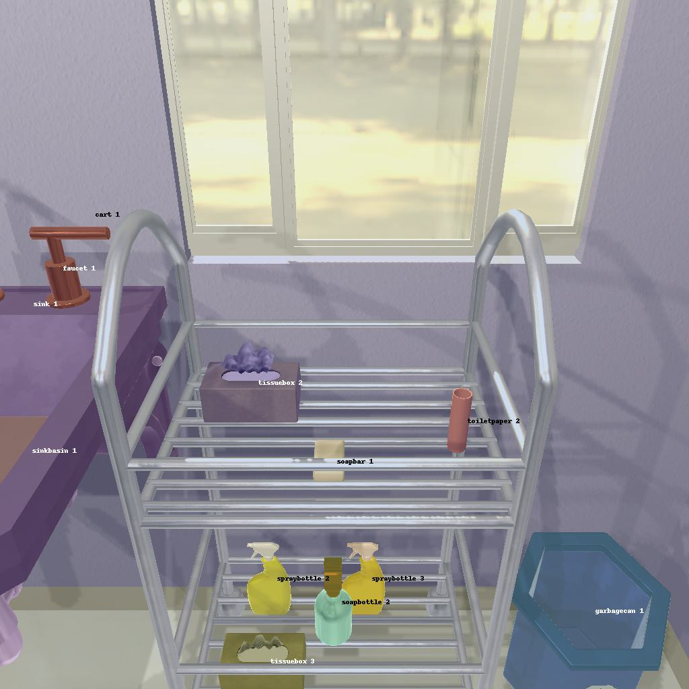

---------------------------------------------------------task: 28---------------------------------------------------------
--------------------------------------------------------------------------------------------------------------------------------------------------------------------
--------------------------------------------------------------------------------------------------------------------------------------------------------------------
Step:--------------------------------------------------------------------------15-------------------------------------------------------------------------------
----------------------------------------
VLM Prompt:
Image1:
Image2:
**Instruction**
1. Analyze the provided image to identify all visible household objects, focusing on those relevant to the task description "find two spraybottle and put them in toilet."
2. Use the analysis of the image and the task hint "The agent must find an object of the desired type, pick it up, find the correct location to place it, put it down there, then look for another object of the desired type, pick it up, return to previous location, and put it down there with the other object." to answer the question: what is the most reasonable action in the choices for the task description "find two spraybottle and put them in toilet"?
4. Decide and write the answer using the template: The answer is: (i): , where i is the real number. If there is no desired object in the image, search every place based on **Initial Observation** to find the object. And if no one is exactly correct, choose a similar answer.
**Initial Observation**
You are in the middle of a room. Looking quickly around you, you can see bathtub (1), bathtubbasin (1), cart (1), sink (1), garbagecan (1), sinkbasin (1), countertop (1), drawer (1-4), toilet (1), toiletpaperhanger (1)
**Answer Choices**
(1): go to bathtub 1
(2): go to bathtubbasin 1
(3): go to sink 1
(4): go to garbagecan 1
(5): go to sinkbasin 1
(6): go to countertop 1
(7): go to drawer 2
(8): go to drawer 3
(9): go to drawer 4
(10): go to toilet 1
(11): go to toiletpaperhanger 1
(12): take tissuebox 2 from cart 1
(13): take tissuebox 3 from cart 1
(14): take faucet 1 from cart 1
(15): take soapbottle 2 from cart 1
(16): take spraybottle 2 from cart 1
(17): take spraybottle 3 from cart 1
(18): take toiletpaper 2 from cart 1
(19): take soapbar 1 from cart 1
(20): examine cart 1
**Answer**
Let's think step by step by following the instructions.
----------------------------------------
----------------------------------------
Original Response:
Firstly, we need to identify the household objects relevant to the task description. In the image provided, we can see various items labeled on a cart, including "spraybottle 2" and "spraybottle 3," which are relevant to the task.
Next, according to the task hint, the agent must find an object of the desired type (spray bottle), pick it up, find the correct location to place it (toilet), put it down there, then look for another object of the desired type, pick it up, return to the previous location, and put it down there with the other object.
Based on the initial observation, the agent is in the middle of a room and can see various household objects, including a toilet. The task requires finding two spray bottles and putting them in the toilet.
The most reasonable actions from the choices provided would be to go to the cart where the spray bottles are visible and take them one by one to the toilet. Therefore, the first action should be to take a spray bottle from the cart.
The answer is: (16): take spraybottle 2 from cart 1. After this action is completed, the agent would then need to take the second spray bottle and go to the toilet to complete the task.
----------------------------------------
----------------------------------------
>>> Refine Original VLM Response and Get Pure Action: take spraybottle 2 from cart 1
----------------------------------------
-----------------------------------------------------------------
Running time: 17.85680627822876 seconds
Total Money: 14.209820000000004
-----------------------------------------------------------------
-----------------------------------------------------------------
Text Observation:You pick up the spraybottle 2 from the cart 1.
-----------------------------------------------------------------
UNSUCCEED